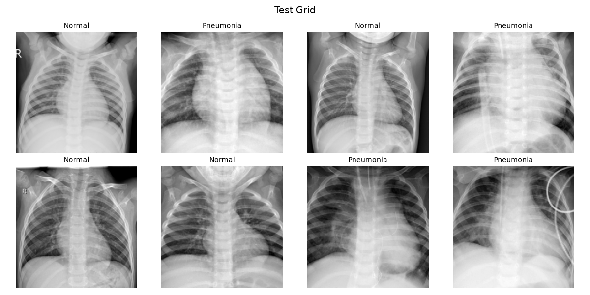
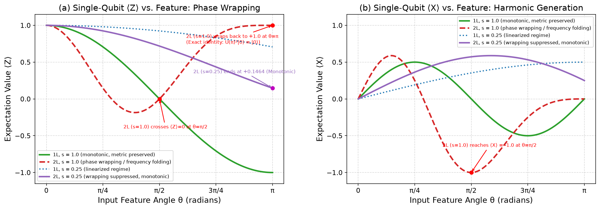
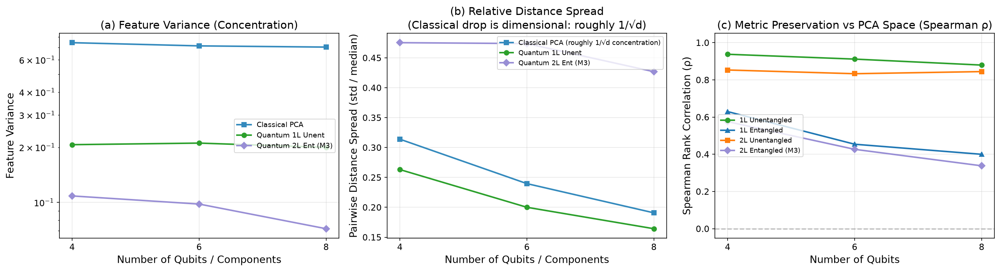

QKernel-Lite
Sawan Kumar (2024BCS0007) · Aryan Gupta (2024BCS0020) · Dirac's Army
The Project in Six Incontrovertible Scientific Facts
Methodological Framework
1. Clinical Testing Ground: We rigorously tested whether Projected Quantum Kernels (PQK) improve classification of pediatric chest X-rays when only $N \in \{10, 20, 50, 100\}$ labeled radiographs exist.
2. The Hybrid Pipeline: Frozen ResNet-18 features ($512$-d) are reduced by train-fold PCA to $8$ orthogonal components, angle-encoded into an 8-qubit register, and projected to $24$ local Pauli expectations.
3. The Scientific Control: An identical RBF kernel on those $24$ values feeds the exact same convex dual SVM solver as the classical baseline (M2), strictly isolating the quantum feature map.
The Measured Scientific Reality
4. Empirical Performance Deficit: Across every scarcity regime ($N \in \{10, 20, 50, 100\}$), the quantum kernel stayed statistically detectably below the classical baseline ($\Delta = M3 - M2 = -0.030$ to $-0.124$ AUC, all $p < 0.001$, Bonferroni surviving).
5. Entanglement Degrades Diagnostic Power: Adding circular CNOT entangling gates collapsed expectation variance 34-fold (from $0.290$ down to $0.0085$) and caused phase wrapping turnaround where healthy lungs and pneumonia map to identical coordinates.
6. The Classical Simulatability Boundary: The only quantum circuit matching the classical control within clinical equivalence ($\pm 0.02$ AUC) is a 1-layer unentangled product state at small scale ($s \le 0.25$), which Taylor-expands directly to a classical polynomial kernel.
Module Ownership & Presentation Sequence
Presenter Module Ownership
- Daksh Singh: Data pipeline, stratified subsampling, ROC-AUC, paired Student's $t$-test, Bonferroni family-wise control ($\alpha = 0.00417$).
- Anshuman Biswas: M1 scratch CNN, parameter under-determination ($P/N > 10^4$), frozen ResNet-18, PCA-8, classical RBF-SVM (M2).
- Himmat Sirwee: PennyLane 8Q circuit, angle encoding, 1-layer closed form, small-$s$ Taylor duality, phase wrapping turnaround.
- Sawan Kumar: Projected kernel theory vs. fidelity barren plateaus, bandwidth $s$ vs. $\gamma$, diagnostics, refuted ZZ correlator test.
- Aryan Gupta: 960-run accounting, tuning budget asymmetry, Streamlit prototype platform, bounded conclusions.

Pediatric Radiography & Extreme Label Scarcity
PneumoniaMNIST Experimental Protocol
Clinical Origin: Pediatric chest radiographs from Kermany et al. (Cell 2018), standardized as $28 \times 28$ grayscale scans. Binary diagnosis: Normal vs. Pneumonia.
Uncompromised Evaluation Test Set: $624$ test images ($234$ normal, $390$ pneumonia). Touched exactly once after 5-fold cross-validation locked all hyperparameters.
Simulated Scarcity Regimes:
- $N = 10$ images ($5$ normal, $5$ pneumonia)
- $N = 20$ images ($10$ normal, $10$ pneumonia)
- $N = 50$ images ($25$ normal, $25$ pneumonia)
- $N = 100$ images ($50$ normal, $50$ pneumonia)

Paired Student's t-Test & Bonferroni Family-Wise Control
Paired Design (15 Seeds, df = 14)
Why Paired? Testing M1, M2, and M3 on identical patient subsets across seeds $0 \dots 14$ cancels between-subset variance, isolating true model differences.
Why Student's $t$ over $z$? With $n=15$, population variance is unknown. Sample standard error requires Student's $t$ distribution with $\text{df}=14$ ($t_{0.025, 14} = 2.145$):
Bonferroni Multiplicity Correction: Across $12$ primary pairwise hypothesis tests, family-wise false-positive control requires:
Equivalence Testing Bound ($\pm 0.02$ AUC)
Absence of Evidence $\neq$ Evidence of Absence: A high $p$-value does not prove two models are equivalent. We formalize equivalence using a strict clinical interval:
Empirical Gate Verification:
- 1-Layer Unentangled (s=0.25): Passes the equivalence gate at $N=20, 50, 100$ (CI fully contained within $[-0.02, +0.02]$).
- 2-Layer Entangled (s=1.00): Fails catastrophic deficit at all $N$ (CI lower bound down to $-0.18$).
M1 Scratch CNN & Frozen ResNet-18 Transfer Learning
M1: Scratch CNN (105,826 Weights)
Architecture: 2 Conv layers (16 & 32 filters, 3×3) + ReLU + MaxPool + Linear(1568, 64) + Linear(64, 1).
Severe Parameter Under-Determination: Training 105k weights on $N=10$ samples means ratio $P/N > 10,000$. The network easily overfits training labels.
Why Did M1 Not Collapse to Chance? M1 achieves $0.847$ AUC at $N=10$ because PneumoniaMNIST features large, distinct global lung consolidations that simple spatial filters detect.
Frozen ResNet-18 Transfer Learning
Why Freeze 11.7M Parameters? Fine-tuning 11 million weights on 10 images guarantees extreme memorization. Freezing ensures zero gradient updates from the small dataset.
Nonlinear Feature Pipeline:
- Grayscale repeated across 3 channels + ImageNet normalization.
- Forward pass in
eval()mode (fixed population BatchNorm statistics). - Global Average Pooling extracts a rich 512-dimensional latent feature vector per chest X-ray.
PCA Dimensionality Reduction & Classical Control (M2)
Principal Component Analysis (PCA)
Why PCA? Exact quantum simulation is constrained to 8 qubits. We project 512 dimensions to 8 orthogonal principal axes.
Zero Data Leakage: PCA is fitted strictly on the $N$ training samples of each fold. At $N=10$, matrix rank is at most $N-1 = 9$.
Variance Captured: 8 principal components explain $\approx 77\%$ cumulative variance. Min-max scaled to $[0, \pi]$ for quantum gate rotation.
M2: Classical RBF-SVM (The True Control)
The Scientific Benchmark: M2 uses the identical 8 PCA features and the exact same dual convex $C$-SVM solver as M3:
Performance Lift Over Scratch CNN (M1):
- $N = 10$: $\mathbf{+0.0488}$ AUC ($p = 0.044$)
- $N = 20$: $\mathbf{+0.0445}$ AUC ($p = 0.0010$, survives Bonferroni)
- $N = 50$: $\mathbf{+0.0211}$ AUC ($p = 0.0032$, survives Bonferroni)
- $N = 100$: $\mathbf{+0.0140}$ AUC ($p = 0.038$)
8-Qubit Angle Encoding & Hardware Circuit Topology
Angle Encoding Circuit Architecture
The Register: 8 qubits initialized to $|0^{\otimes 8}\rangle = |00000000\rangle$. Each PCA component $\theta_i$ drives one qubit.
Single-Qubit Gate Rotations: On each qubit $i$ with scale $s$:
Circular Entangling Ring: Closed CNOT chain: $(0,1), (1,2), \dots, (6,7), (7,0)$ generates multi-particle entanglement.
Statevector Simulation vs. Physical NISQ Hardware
Noiseless Statevector (PennyLane lightning.qubit): We simulate state vectors exactly without shot noise. Statevector dimension is $2^8 = 256$ complex amplitudes.
What Real NISQ QPUs Face:
- Finite shot noise: statistical standard error $\sim 1/\sqrt{\text{shots}}$.
- Thermal relaxation ($T_1$) and dephasing ($T_2$).
- CNOT routing overhead across physical qubit coupling topologies.
Analytical Derivation: 1-Layer Product State & Small-s Duality
Exact Closed Form (1-Layer, Unentangled)
Applying $R_Y(s\theta)$ to $|0\rangle$ rotates the state in the $X$-$Z$ plane:
Applying $R_Z(s\theta)$ adds a relative phase shift to $|1\rangle$:
Computing expectation values $\langle P \rangle = \langle \psi | P | \psi \rangle$ for all three Pauli matrices:
Small-s Linearization (The Classical Duality)
When scale factor $s$ is tuned small ($s \in \{0.0625, 0.125\}$), Taylor expansion of the closed-form trigonometric functions gives:
The Classical Duality Consequence:
- The quantum observables become strictly linear in $\langle X \rangle$ and quadratic in $\langle Y \rangle$ and $\langle Z \rangle$.
- Feeding these into a classical RBF kernel reduces the model to a classical polynomial/RBF kernel.
Physical Failure Modes: Phase Wrapping & Entanglement Collapse
The Phase Wrapping Bug & Variance Collapse
The Turnaround Bug ($s=1.00$): In a 2-layer circuit, rotation angles accumulate. Because $U(\pi)^2|0\rangle = |0\rangle$, $\langle Z \rangle$ drops to $-1$ at $\theta = \pi/2$ and then turns around, returning to $+1$ at $\theta = \pi$:
Clinical Disaster: Low-opacity healthy lungs ($\theta \approx 0$) and dense pneumonia consolidations ($\theta \approx \pi$) get mapped to the exact same point!
Entanglement Variance Collapse: CNOTs put individual qubits into mixed states. Feature variance collapses 34-fold (from $0.290$ down to $0.0085$).

Projected Quantum Kernels vs. Fidelity Barren Plateaus
Global Fidelity Kernels Fail in High Dims
Fidelity Definition: $k_{\text{fid}}(\mathbf{x}, \mathbf{x}') = |\langle \phi(\mathbf{x}) | \phi(\mathbf{x}') \rangle|^2$. For two single-qubit Bloch vectors $\mathbf{a}$ and $\mathbf{b}$, $k_{\text{fid}} = (1 + \mathbf{a} \cdot \mathbf{b})/2$.
Exponential Concentration: In an $n$-qubit Hilbert space ($2^n$ dimensions), Haar-random quantum states become orthogonal with high probability. Kernel values concentrate around 0:
For large $n$, the Gram matrix collapses to identity matrix $I$, destroying classification.
Projected Quantum Kernels (Huang et al. 2021)
Projection Mechanism: Instead of global state overlap, PQK projects the quantum state back to classical metric space via 1-particle reduced density matrices:
A classical Gaussian RBF kernel is then evaluated on these $3n$ expectation values:
Empirical Diagnostics & The Tested ZZ Correlator Hypothesis

The Refuted ZZ Correlator Hypothesis
Spearman Rank Distortion: M2 classical RBF preserves geometric ordering ($r = 0.998$). Unentangled M3 preserves it well ($r = 0.924$). Entangled M3 distorts geometry severely ($r = 0.412$).
The Hypothesis: Did entangled circuits perform poorly because 1-qubit Paulis discarded two-qubit quantum correlations created by CNOT gates?
The Experiment: Added 8 nearest-neighbor $\langle Z_i Z_{i+1} \rangle$ observables ($32$ total expectations) on 8Q 2L Ent across 5 seeds.
The Result: Test AUC dropped at every sample size ($N=10: -0.013; N=20: -0.034; N=50: -0.010; N=100: -0.014$).
Exact Experimental Accounting: 960 Controlled Runs
Row Accounting (15 Seeds, 0 to 14)
| Pipeline Model | Configurations | Total Runs |
|---|---|---|
| M1: Scratch CNN | 4 N values × 15 seeds | 60 runs |
| M2: Classical RBF | 4 N × 3 PCA comps (4,6,8) × 15 seeds | 180 runs |
| M3: Default PQK (s=1) | 4 N values × 15 seeds | 60 runs |
| M4: 11 Ablation Cells | 4 N × 11 circuit variants × 15 seeds | 660 runs |
| Total Benchmark | 100% Seed Parity (df = 14) | 960 runs |
Every single run evaluated on the exact same 624-image test set.
Tuning Budget Asymmetry
The Hyperparameter Search Grids:
- M2 Classical: Grid search over $C$ (6 values) and $\gamma$ (6 to 9 values) = 36 to 54 configurations per fold.
- M3 Tuned PQK: Grid search over $C$ (6), $\gamma$ (9), AND scale $s$ (5 values: 0.0625, 0.125, 0.25, 0.5, 1.0) = 270 configurations per fold.
The Scientific Significance: M3 was given a $5\times$ larger hyperparameter tuning budget than the classical baseline.
Empirical Benchmark Ledger & Bonferroni Significance
The 15-Seed Benchmark Results Ledger
| Model | N = 10 | N = 20 | N = 50 | N = 100 |
|---|---|---|---|---|
| M1: Scratch CNN | 0.8469 | 0.8653 | 0.9011 | 0.9110 |
| M2: Classical RBF | 0.8957 | 0.9098 | 0.9222 | 0.9250 |
| M3: Default (s=1) | 0.5557 | 0.5739 | 0.7479 | 0.8228 |
| M3: Tuned s | 0.7717 | 0.8252 | 0.8926 | 0.8962 |
| Gap (M3 − M2) | −0.1241 | −0.0846 | −0.0296 | −0.0288 |
| p-value (Bonf) | 2.4e-4 | 3.8e-4 | 7.9e-4 | 1.5e-4 |

Streamlit Research Prototype & Disclaimer
Internal Database & Instant Inference
Lightweight Architecture: Compiled 28.6 MB internal database (prototype_db.npz) pre-storing all 624 patient test scans, PCA angles, 24 Pauli expectations, and dual Gram matrices.
Instantaneous Switching: Scans, seeds, and scaling factors update in under 5ms without runtime quantum simulation or PyTorch graphs.
Interactive Inspector Features:
- Simultaneous tri-model decision outputs (M1 prob, M2 & M3 margins).
- Dynamic PennyLane circuit visualizer and 24-observable Pauli chart.
- Dual Gram matrix heatmap comparison and condition numbers.
Mandatory Clinical Research Disclaimer
Investigation Only: This prototype platform is designed strictly for evaluating quantum machine learning methodologies under controlled academic benchmarks. It is NOT certified as a medical device and must NEVER be used to guide pediatric clinical diagnosis or patient care.
Scientific Transparency: The frontend does not conceal quantum deficits—it highlights the exact phase wrapping failure modes and variance collapse directly to the user.
http://152.67.6.234/.
Bounded Conclusions & Viva Defense Integrity
What We Stand Behind (Permissible)
- Transfer Learning Dominance: Accounts for 100% of diagnostic performance (+0.36 AUC lift over scratch CNN at $N=10$).
- No Quantum Advantage: M3 is statistically detectably below M2 across all sample sizes (deficits of $-0.030$ to $-0.124$ AUC, $p < 0.001$).
- Product State Equivalence: The only quantum model matching M2 within $\pm 0.02$ AUC is a classically simulable 1-layer product state.
- Entanglement Hurts: Circular CNOT entangling gates collapse single-qubit expectation variance by $34\times$ (from $0.290$ to $0.0085$).
What We Explicitly Do Not Claim
- We do not claim a universal proof that quantum kernels cannot classify medical images in any setting.
- We do not claim entanglement scrambles pathology in all architectures or feature maps.
- We do not claim M3 'ties' or 'matches' M2.
- We report what we measured with full transparency, 960 controlled runs, 15 seeds, and zero data leakage.